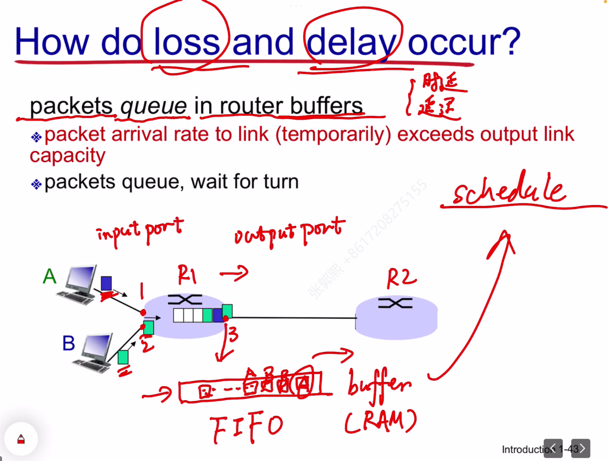
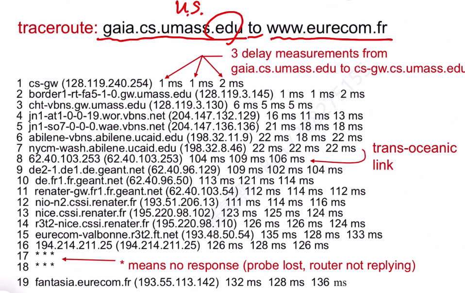

计算机网络——第一章：计网简介
要求：
重点：4，5
不考：6，7
P2P
什么是因特网
协议
协议（ protocol)：定义了在两个或多个通信实体之间交换的报文的格式和顺序，以及报文发送和/或接收一条报文或其他事件所采取的动作。
- TCP (Transmission Control Protocol，传输控制协议）和IP( Internet Protocol，网际协议）是因特网中两个最为重要的协议。IP协议定义了在路由器和端系统之间发送和接收的分组格式。因特网的主要协议统称为TCP/IP。我们在这一章中就开始接触这些协议。但这仅仅是个开始，本书的许多地方与计算机网络协议有关。
CN演进
网络边缘
网络边缘即端系统（主机），分为两类：
- 客户端 client
- 服务器 server
家庭接入
企业（家庭）以太网
无线网络
物理媒介
网络核心
丢包和延迟

- loss 丢包
- 当路由器的队列满后（没有空闲的buffer），到达的数据包就会被丢掉。——概率最高的丢包行为，不会告知src
- TTL减为0时，数据包被丢掉。——会通知src丢包
- delay 延迟
- output link capacity即指带宽，数据包到达速率超过带宽，就会在包队列中等待
- 不同的路由器队列调度算法：FIFO，weighted round-robin等，可能导致不同的延迟效果
延迟的四种原因
$d_{proc}$:预处理延迟
- 检测比特是否出错：检测和纠错算法：
- 奇偶校验 parity
- check sum：用于TCP IP检测
- CRC 循环冗余：网卡检测
- 选择合适的输出链路（即路由 routing）
- 最短路等
- 往往是毫秒级的，影响很小
- 检测比特是否出错：检测和纠错算法：
$d_{queue}$：队列阻塞延迟，取决于路由器的阻塞级别
- $d_{trans}$ ：传输延迟：数据包的二进制数转化为电信号、光信号等的时间(通过调制解调器（猫）)
- 计算公式：$\frac{L}{R}$ 分别表示数据包长度（bits）和带宽（bits/s）：每秒转化的比特数
- 带宽：网卡每秒能将多少bit转化为信号发到链路
- 带宽时延积(Bandwidth-Delay Product ，BDP)：链路上的最大比特数
- $d_{prop}$：传播延迟：链路上传播的时间
例题
- 锚定信号头计算
- 信号完成转化标志：信号尾出现在链路上
- t1传输延迟，因只有一个bit，所以是1/b
- t2传播延迟（t2-t0 = d）
对一个数据包而言（多个bit）:
- 对于同一个数据包，路由器转发以一个数据包为单位，即接受完一个完整的包后才能转发。
- 不同数据包无需等待，可以边接收边转发
- 计算过程：
- 锚定head，针对一条链路的第一个数据包：
- 传输延迟：p/b
- 传播延迟：d
- 则第一个数据包到达dst时间：(d+p/d) * k
- 后续包在dst接受时间：(m-1)* (p/d)
- 总时间：(d+p/d) * k + (m-1)* (p/d)
- 锚定head，针对一条链路的第一个数据包：
丢包
两种丢包情况：
- Traceroute： 网络debug：修改TTL分别为1,2,3,…,n，分别通过计算不同包发出到返回的时间，计算到i号路由的距离

吞吐量
单位时间经过一个系统的比特数
- 与带宽不同：带宽针对链路，吞吐量针对系统
协议
协议分层（TCP/IP协议栈）
各层的所有协议被称为协议栈（ protocol stack)。因特网的协议栈由5个层次组成:物理层、链路层、网络层、运输层和应用层。采用了自顶向下方法（ top-down approach)，首先处理应用层,然后向下进行处理。
应用层：解决某个行业的业务问题（business）
传输层：进程到进程的数据传输，用户进程依赖操作系统内核（通过System Call将数据交给内核）的TCP/UDP模块进行通信
网络层：解决路由问题（routing），通过IP模块进行路径选择
链路层：neighboring transfer.邻居节点（不通过路由器就可以通讯的相邻节点）之间的传输。（一半软件（网卡启动），一半硬件（CRC校验电路等））
- 确定传输速度匹配（一般以低速为准）、检测链路上的信号碰撞等
物理层：进行信号转化
OSI协议栈：7层
封装
每一层（物理层除外）会在数据包前端拼接一个包头。frame包体最大
接受时每一层处理完一个层次扔掉一个对应包头
本博客所有文章除特别声明外，均采用 CC BY-NC-SA 4.0 许可协议。转载请注明来自 Guoxi's Blog！